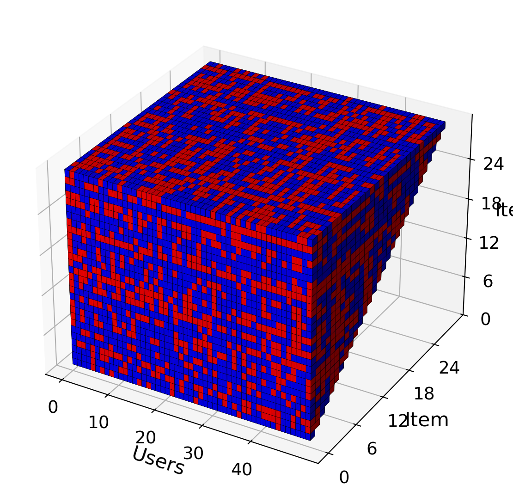
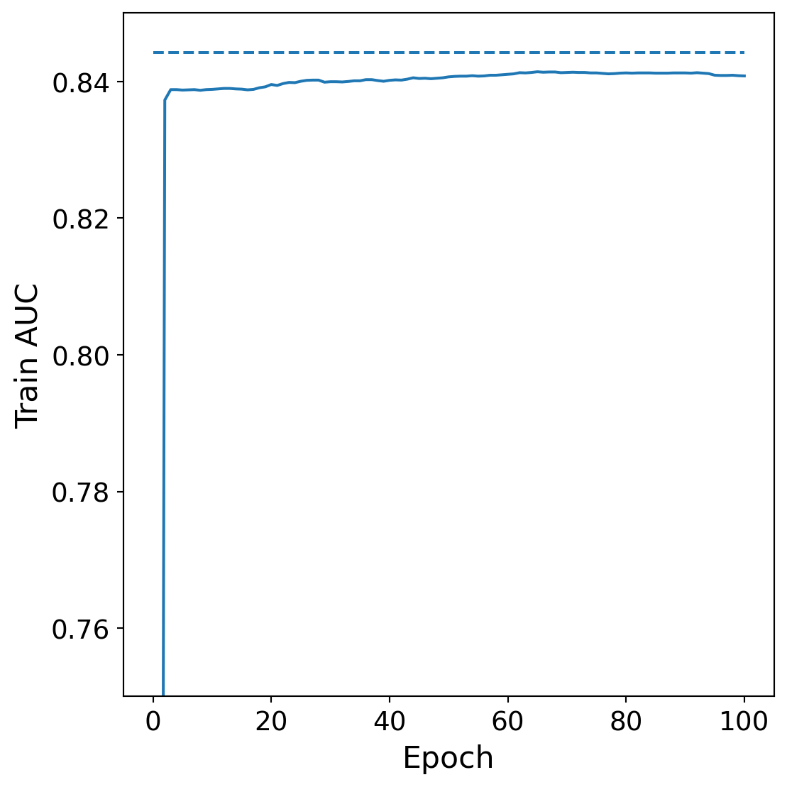
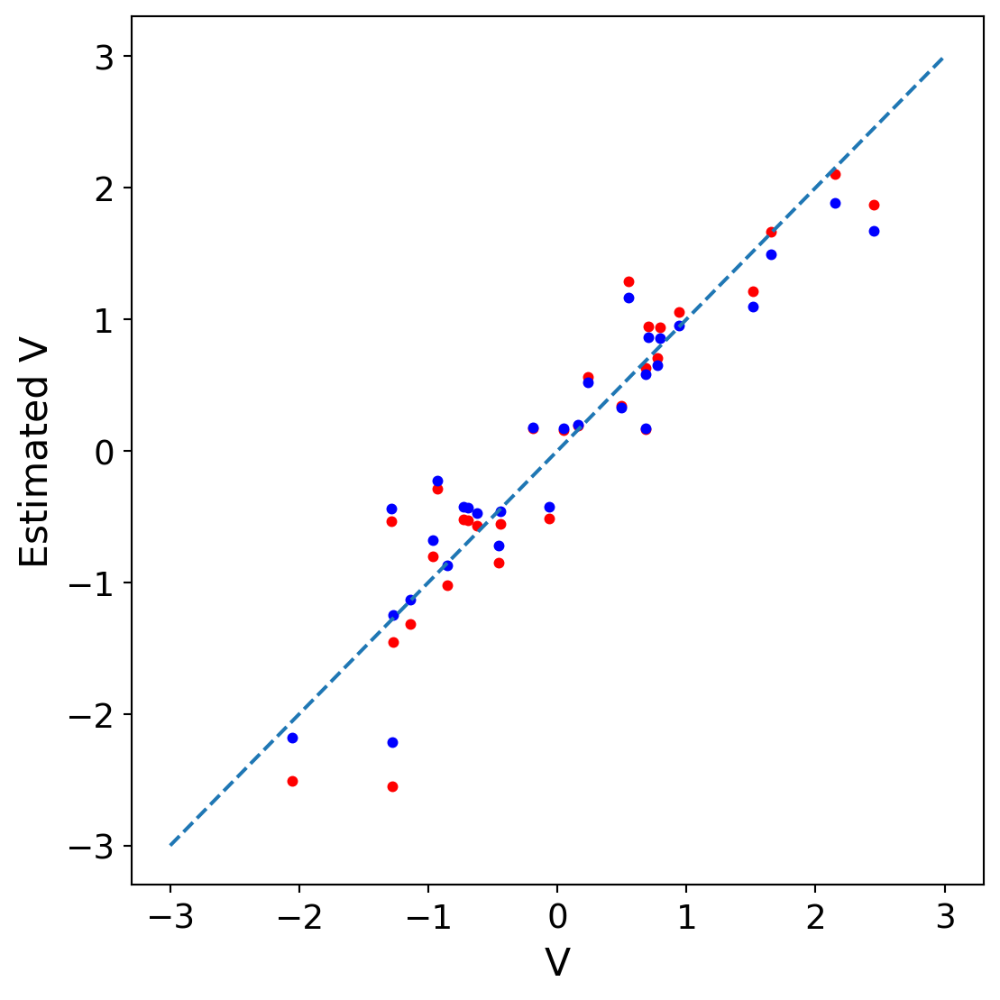

Designing a good reward signal by hand for a complex AI system is difficult and error-prone. Instead of manually specifying desirable behavior, we can learn a utility signal from preference data. In this chapter, we explore how to infer an underlying utility from various forms of feedback. Throughout, we include mathematical formulations and code examples to illustrate the learning process.
2.1 Data Generating Process: A Latent Variable Perspective
Before introducing models for preference data, it is useful to begin with some stylized empirical observations. For example, surveys indicate that only a small fraction of the US population report liking durian, while a much larger fraction endorse liking banana or strawberry. Some people appear to have a general fondness for fruit, while others are relatively indifferent or even averse. Interestingly, even within fruit-likers, there is heterogeneity: some prefer durian over banana, while others show the opposite ordering. These facts suggest several latent forces at work (appetites, baseline appeal, trait heterogeneity) that any plausible data-generating process (DGP) for preference must accommodate. Below we propose one such DGP as a conceptual scaffold for understanding the observed patterns.
We denote \(Y_{i,j}\) to be the response of user \(i\) to item \(j\), which is drawn from a collection of \(M\) items. The response is \(1\) if the user likes the item and zero otherwise. The Rasch model posits that response is a Bernoulli random variable governed by user’s appetite \(U_i \in \mathbb{R}\) and item’s appeal \(V_j \in \mathbb{R}\):
\[
p(Y_{i,j} = 1 | U_i, V_j) = \sigma(H_{i,j}), \quad H_{ij} = U_i + V_j
\] where \(\sigma\) is the logistic function. The user appetite is a latent variable represents the appetite construct, which is the tendency of the user to like items in the collection in general, and the item appeal is how easy it is for the item to be like by the population of users.
The user can express their affinity via several mechanisms. For example: thumbs-up/down on an e-commerce site, swiping on a dating site, or skipping a track on a music app. User- and item-specific parameters do not need to be unidimensional. When appetide and appeal are \(K\) dimensional, the data generating process is \[
p(Y_{i,j} = 1 | U_i, V_j, Z_j) = \sigma(H_{i,j}), \quad H_{ij} = d(U_i, V_j + Z_j),
\] where \(d\) is some distance function in the \(K\) dimensional space, \(U_i\) is the user-specific appetide for each dimension, \(V_j\) is the item loading, and \(Z_j\) is the offset. When \(d\) is the negative Euclidean distance, the model is know as the Ideal Point Model, which is popular in political sciences and psychometrics: \[
H_{ij} = -||U_i - V_j ||_2 + Z_j
\] In this case, \(U_i\) is the user embedding and \(V_j\) is the item embedding with some scalar offset \(Z_j\). When the distance function is the dot product, the above generating process is known as the logistic factor model, a popular class of model in psychometrics: \[
H_{ij} = U_i^\top V_j + Z_j
\]
Each of the \(K\) dimension represents different property of the items. For example, when \(K=2\), a fruit might be sweet and have a strong aroma, and some users might look for sweetness, while others who might avoid sugar and look for strong aroma.
In many case, the user might be asked to express their preference in term of comparison between two item \(j\) and \(j'\), in which the response \(Y_{i,jj'}\) is one if the item \(i\) is preferred and zero otherwise. \[
p(Y_{i,jj'} = 1 | i, j, j') = \sigma(H_{i,j} - H_{i,j'}) = \frac{\exp(H_{ij})}{\exp(H_{ij}) + \exp(H_{ij'})},
\] where the last equality uses the logistic identity. This is also known in the literature as the Bradley-Terry model. For a single user, if the generating process for item-wise preference is Rasch, we can further simplify \(H_{i,j} - H_{i,j'} = U_i + V_j - U_i - V_{j'} = V_j - V_{j'}\). Hence, for a single user, the logit does not depend on the user-specific appetide, but only on the item parameters. This is generally not true for other classes of model.
In the item-wise preference, the responses for \(N\) user and \(M\) items is a 2D matrix with shape \(N \times M\), while in the pairwise preference, the responses for the same number of users and items is a 3D tensor with shape \(N \times M \times M\).
Given a data generating process, we can synthesize some data. The code below is for generate a response matrix for Rasch response:
Remember, the Bradley-Terry response above is just for a single user. To work with \(N\) user, we need to obtain the \(N \times M \times M\) tensor. To see heterogeneity, we need to simulate data under the K-dimensional factor model. The Rasch model does not have this effect since the response of each user does not depend on the user appetide.
from matplotlib.colors import ListedColormapfrom mpl_toolkits.mplot3d import Axes3D # noqa: F401K =3# latent dimensionsrng = np.random.default_rng(13)U = rng.normal(0, 1.0, size=(N, K)) # user embeddingsV = rng.normal(0, 1.0, size=(M, K)) # item embeddingsZ = rng.normal(0, 1, size=(M,)) # item offsetsH = U @ V.T + Z[None, :]H_expanded_j = H[:, :, None] # (N, M, 1)H_expanded_k = H[:, None, :] # (N, 1, M)diff = H_expanded_j - H_expanded_k # (N, M, M)P_pair =1.0/ (1.0+ np.exp(-diff))# Mask diagonals (j == k)for i inrange(N): np.fill_diagonal(P_pair[i], np.nan)randu = rng.random(size=P_pair.shape)Y_pair = (randu < np.nan_to_num(P_pair, nan=0.0)).astype(int)# Force antisymmetry: Y[i,j,k] = 1 - Y[i,k,j], ignore diagonalfor i inrange(N):for j inrange(M): Y_pair[i, j, j] =0for k inrange(j+1, M): Y_pair[i, k, j] =1- Y_pair[i, j, k]# Mask lower triangle (keep j>k) to avoid duplicatestri_mask = np.triu(np.ones((M, M), dtype=bool), k=1)volume = np.zeros_like(Y_pair, dtype=bool)volume[:, :, :] = tri_mask[None, :, :]# We'll assign colors based on Y_pair, but only keep voxels where tri_mask is Truevalues = np.where(volume, Y_pair, -1) # -1 means no voxelred = np.array([1.0, 0.0, 0.0, 0.95])blue = np.array([0.0, 0.0, 1.0, 0.95])transparent = np.array([0, 0, 0, 0.0])facecolors = np.empty(values.shape + (4,))facecolors[:] = transparentfacecolors[values ==1] = redfacecolors[values ==0] = bluefig = plt.figure(figsize=(6, 6))ax = fig.add_subplot(111, projection='3d')ax.voxels(values !=-1, facecolors=facecolors, edgecolor='k', linewidth=0.2)ax.set_xlabel("Users")ax.set_ylabel("Item")ax.set_zlabel("Item")ax.set_xticks(np.arange(0, N, max(1, N //5)))ax.set_yticks(np.arange(0, M, max(1, M //5)))ax.set_zticks(np.arange(0, M, max(1, M //5)))

2.2 Parameter Learning via Full Information Maximum Likelihood Estimation
Given a response from a particular generating process, there are various standard statistical inference procedure, such as maximum likelihood, maximum marginal likelihood, or Bayesian inference. These procedure is designed to infer parameters that are generalizable to new datasets. Hence, we discuss the training and testing dataset next.
The simplest train/test splitting is random, where we select random element of the response matrix to be in the training set, and the rest in the test set. We can demonstrate, for example, with the Bradley-Terry response with a 80% training and 20% testing data:
Having the train and test datasets from the Bradley-Terry response, which is denoted as \(\mathcal{D}_{\text{train}}\) and \(\mathcal{D}_{\text{test}}\), we first demonstrate the parameter learning with full information maximum likelihood estimation:
\[
\hat{V} = \arg\max_{V} \sum_{j,j' \in \mathcal{D}_{\text{train}}} \log p(Y_{0,jj'} | P_{0,jj'}), \quad P_{0, jj'} = V 1_M^\top - 1_M V^\top,
\] where \(1_M\) is a column vector of 1 with length \(M\). The optimization can be carried out with standard optimizers, such as gradient descent.
Let \(\mathcal{N}^+_{m={(m,k) \in \mathcal D*{\text{train}}}}\) be pairs recorded in the order \((m,k)\). Let \(\mathcal{N}^-_{m={(k,m)\in\mathcal D*{\text{train}}}}\) be pairs recorded in the order \((k,m)\). Define residuals \(r_{mk} = y_{mk} - \sigma(V_m - V_k)\) and \(r_{km} = y_{km} - \sigma(V_k-V_m)\). Then
This shows the contribution of data about \(m\) only. Each comparison with opponent \(k\) adds a term equal to the observed-minus-predicted win indicator, with a plus sign if \(m\) is listed first and a minus sign if \(m\) is listed second. Intuition. If \(m\) beats \(k\) more often than the model predicts, the residual is positive and the gradient pushes \(V_m\) up. If \(m\) loses to \(k\) more than predicted, the residual is negative and the gradient pushes \(V_m\) down.
def auc_from_scores(scores, labels): pos = scores[labels ==1] neg = scores[labels ==0]if pos.size ==0or neg.size ==0:return np.nan# Brute-force definition to avoid dependencies and handle tiescmp= (pos[:, None] > neg[None, :]).mean() ties = (pos[:, None] == neg[None, :]).mean()returncmp+0.5* ties# Collect observed training pairs and labels from the upper triangle onlyr_obs, c_obs = np.where(~np.isnan(Y_train))upper_mask = r_obs < c_obsr_tr_fit = r_obs[upper_mask]c_tr_fit = c_obs[upper_mask]y_tr_fit = Y_train[r_tr_fit, c_tr_fit].astype(float)epochs =100lr =0.01train_auc_hist = []n_pairs = r_tr_fit.sizeV_hat = np.zeros(M, dtype=float)for t inrange(epochs):# Scores and probabilities for observed training pairs H = V_hat[r_tr_fit] - V_hat[c_tr_fit] p =1.0/ (1.0+ np.exp(-H)) err = (y_tr_fit - p) grad = np.zeros_like(V_hat) np.add.at(grad, r_tr_fit, err) np.add.at(grad, c_tr_fit, -err) V_hat += lr * grad train_auc_hist.append(auc_from_scores(H, y_tr_fit))# Collect observed test pairs and labels from the upper triangler_te_obs, c_te_obs = np.where(~np.isnan(Y_test))upper_mask_te = r_te_obs < c_te_obsr_te_fit = r_te_obs[upper_mask_te]c_te_fit = c_te_obs[upper_mask_te]y_te_fit = Y_test[r_te_fit, c_te_fit].astype(float)# Scores for test pairss_te = V_hat[r_te_fit] - V_hat[c_te_fit]test_auc = auc_from_scores(s_te, y_te_fit)# Plotplt.plot(np.arange(1, epochs +1), train_auc_hist, label="Train")plt.hlines(test_auc, xmin=0, xmax=epochs, linestyle="--", label="Test")plt.xlabel("Epoch")plt.ylabel("Train AUC")plt.ylim(0.75, 0.85)plt.show()

In this synthetic setting, one way to interpret the result is to compare with the Bayes optimal AUC. Here we quantify an upper bound on achievable test AUC under the assumed data-generating process. For each test pair \((j,k)\) we know the ground-truth win probability \(P_{jk}=\sigma(V_j-V_k)\) from the simulator. The Bayes-optimal score for that pair is exactly this probability, \(s^*_{jk}=P_{jk}\). Any classifier that ranks pairs by \(s^*\) maximizes AUC in expectation because it orders pairs by their true success probabilities. To estimate the corresponding Bayes AUC on our finite test set, we keep the same index set of pairs and repeatedly resample binary labels \(Y_{jk} \sim \mathrm{Bern}(P_{jk})\), then compute \(\mathrm{AUC}(s^*, Y)\) on each resample using a tie-aware definition. The mean of these Monte Carlo AUCs is the Bayes-optimal test AUC, and the empirical quantiles give a sampling range induced purely by label noise. For comparison, we compute the model’s AUC by replacing \(s^*_{jk}\) with the learned scores \(s^{*\text{model}}_{jk}=\sigma(\hat V_j-\hat V_k)\). The gap between the two summarizes how far the fitted model is from the oracle ranking implied by the true \(P^*_{jk}\) on the exact same test pairs.
def collect_pairs(Y): r, c = np.where(~np.isnan(Y)) upper = r < creturn r[upper], c[upper], Y[r[upper], c[upper]].astype(float)# Unordered test setr_te_u, c_te_u, y_te_u = collect_pairs(Y_test)# Bayes scores and model scores for those exact pairss_bayes = P[r_te_u, c_te_u] # ground-truth probss_model =1.0/(1.0+np.exp(-(V_hat[r_te_u]-V_hat[c_te_u])))auc_bayes = auc_from_scores(s_bayes, y_te_u)auc_model = auc_from_scores(s_model, y_te_u)print(f"Test AUC. Bayes: {auc_bayes:.4f}. Model: {auc_model:.4f}.")def resample_labels_from_P(r_idx, c_idx, P_mat, rng): p = P_mat[r_idx, c_idx]return (rng.random(size=p.size) < p).astype(float)R =2000# repeatsbayes_list = []model_list = []for _ inrange(R): y_resamp = resample_labels_from_P(r_te_u, c_te_u, P, rng) bayes_list.append(auc_from_scores(s_bayes, y_resamp)) model_list.append(auc_from_scores(s_model, y_resamp))print(f"Mean AUC over resamples. Bayes: {np.mean(bayes_list):.4f}. Model: {np.mean(model_list):.4f}.")print(f"5–95% range Bayes: {np.percentile(bayes_list,[5,95])}. Model: {np.percentile(model_list,[5,95])}.")
Test AUC. Bayes: 0.8195. Model: 0.8443.
Mean AUC over resamples. Bayes: 0.8259. Model: 0.8071.
5–95% range Bayes: [0.75343203 0.89377286]. Model: [0.73076311 0.8762815 ].
The result shows that the inference has found a good solution compare to the Bayes optimal estimator! A additional, natural test is to see if the estimated parameters match the true ones. Since the likelihood function only pays attention of the difference of item appeal for any pair, the appeal is only identifiable up to a shift and scale transform. The standard practice is to center and whiten the solution.
# Center and whiten V_hat (zero mean, unit variance)V_hat_norm = (V_hat - V_hat.mean()) / (V_hat.std() +1e-12)# Fit best affine map a*V_hat_norm + b to V (least squares)A = np.vstack([V_hat_norm, np.ones_like(V_hat_norm)]).Ta, b = np.linalg.lstsq(A, V, rcond=None)[0]V_hat_aligned = a * V_hat_norm + b# After alignment, points should cluster near the diagonalplt.scatter(V, V_hat, s=12, c="red")plt.scatter(V, V_hat_aligned, s=12, c="blue")lims = [-3, 3]plt.plot(lims, lims, linestyle="--")plt.xlabel("V")plt.ylabel("Estimated V")# Report alignment qualitycorr = np.corrcoef(V, V_hat)[0, 1]mse = np.mean((V - V_hat) **2)print(f"Before center and whiten: Corr {corr:.4f}, MSE: {mse:.6f}")corr = np.corrcoef(V, V_hat_aligned)[0, 1]mse = np.mean((V - V_hat_aligned) **2)print(f"After center and whiten: Corr {corr:.4f}, MSE: {mse:.6f}")
Before center and whiten: Corr 0.9346, MSE: 0.165199
After center and whiten: Corr 0.9346, MSE: 0.146000

2.3 Parameter Learning via Bayesian Inference
A Bayesian approach provides a natural alternative to maximum likelihood for parameter estimation in the Bradley–Terry model. Instead of finding a single point estimate for the item parameters (V), we place a prior distribution on them (e.g., independent standard normals) and update this prior using the Bernoulli likelihood from the observed comparisons. This yields a posterior distribution over (V), which captures both central estimates and the uncertainty around them. In practice, this posterior cannot be computed in closed form, so we turn to approximate inference. One common method is Markov chain Monte Carlo (MCMC), which constructs a sequence of samples that, in the limit, follow the posterior distribution.
In particular, the Metropolis–Hastings (MH) algorithm is straightforward to apply: at each step, we propose a new value for one or more coordinates of (V) (e.g., from a Gaussian centered at the current state), compute the acceptance ratio as the ratio of posterior densities between the proposed and current states, and accept the proposal with that probability. Repeating this process produces a chain of samples that can be used to approximate posterior means, variances, or other functionals of interest. This approach not only yields point predictions but also quantifies uncertainty about the relative strengths of items under the Bradley–Terry model.
Let the prior be i.i.d. standard normal for each item parameter: \(p(V) = \prod_{j=1}^M \mathcal N(V_j \mid 0, 1)\). Then the posterior distribution is \(p(V \mid \mathcal D) = p(\mathcal D \mid V)p(V)/p(\mathcal D),\) where the likelihood is \[
p(\mathcal D \mid V) = \prod_{(j,j')\in\mathcal I} \sigma(V_j - V_{j'})^{Y_{jj'}}
\bigl(1-\sigma(V_j - V_{j'})\bigr)^{1-Y_{jj'}}.
\]
The denominator is the marginal likelihood (evidence), which is intractable in closed form, so we resort to MCMC (e.g., MH) to sample from the posterior. Suppose we are at current (parameter) state \(V^{(t)}\). We propose a new state \(V'\) from a proposal distribution, such as Gaussian: \(q(V' \mid V^{(t)}) = \mathcal N (V'; V^{(t)}, \tau^2 I),\) where \(\tau^2\) is a step-size variance. This proposal is symmetric, meaning \(q(V' \mid V^{(t)}) = q(V^{(t)} \mid V').\) For any proposal distribution \(q(V' \mid V^{(t)})\), the Metropolis–Hastings acceptance probability is
This says: accept the proposal with probability proportional to how much more plausible it is under the posterior, adjusted by how easy it is to propose back. If we choose a Gaussian proposal, the proposal terms cancel out in the ratio due to symmetry. So the acceptance rule simplifies to \[
\alpha = \min \{1, \frac{p(V' \mid \mathcal D)}{p(V^{(t)} \mid \mathcal D)} \} = \min \{1, \frac{p(\mathcal D \mid V'), p(V')}{p(\mathcal D \mid V^{(t)}), p(V^{(t)})} \}.
\]
In many applications, comparisons between items arrive sequentially over time rather than being observed all at once. For example, players in online games are continuously matched, or recommendation systems log one user preference at a time. In such settings, it is often computationally infeasible to refit the full Bradley–Terry model by maximum likelihood or MCMC after each new observation. Instead, we want an online update rule that adjusts item strengths incrementally as new outcomes arrive.
This is precisely the motivation behind the Elo rating system, originally introduced for ranking chess players and later widely adopted in competitive games, online platforms, and even information retrieval. The key idea is to maintain a current estimate of each item’s (or player’s) latent strength, and update only the two items involved in a match when a new result comes in.
The Elo rule can be derived as a stochastic gradient ascent method on the Bradley–Terry log-likelihood. Suppose item (j) plays against item (j’). Given the current parameters, the log-likelihood gradient with respect to \(V_j\) and \(V_{j'}\) is \[
\frac{\partial \ell}{\partial V_j} = (y - p), \qquad
\frac{\partial \ell}{\partial V_{j'}} = -(y - p).
\]
This is exactly the Elo update rule. The learning rate \(\eta\) is often called the K-factor in Elo literature. If \(y=1\) (item j wins) but the model predicted a low (p), then (y - p) is positive and (V_j) increases, (V_{j’}) decreases — the system learns that (j) is stronger than previously believed If \(y=0\) (item j’ wins), the opposite adjustment happens. The magnitude of the update is larger when the outcome is surprising (large prediction error), and smaller when the outcome is expected (small prediction error). Thus, Elo is an online learning algorithm for the Bradley–Terry model, interpretable as stochastic gradient ascent with a fixed step size.
# Build a stream of observed pairs for the single user from Y_BT upper trianglepairs_stream =list(zip(triu_r, triu_c))labels_stream = Y_BT[triu_r, triu_c].astype(float)# Initialize ratings r (Elo analog of v)r = np.zeros(M)Kfactor =1.0# step sizedef logistic_prob(a, b):return1.0/ (1.0+ np.exp(-(a - b)))for (j, k), y inzip(pairs_stream, labels_stream): p = logistic_prob(r[j], r[k])# Update: winner gets +K*(1-p), loser gets -K*(1-p)# If y=1 means j wins. If y=0 means k wins.if y ==1.0: r[j] += Kfactor * (1- p) r[k] -= Kfactor * (1- p)else: r[k] += Kfactor * p r[j] -= Kfactor * p# optional centering r -= r.mean()# Evaluate Elo ratings on held-out test pairs (same y_te from above)p_te_elo =1.0/ (1.0+ np.exp(-(r[r_te] - r[c_te])))auc_elo = auc_from_scores(p_te_elo, y_te)
Source Code
---title: Learningformat: htmlfilters: - pyodideexecute: engine: pyodide pyodide: auto: true---Designing a good reward signal by hand for a complex AI system is difficult and error-prone. Instead of manually specifying desirable behavior, we can learn a utility signal from preference data. In this chapter, we explore how to infer an underlying utility from various forms of feedback. Throughout, we include mathematical formulations and code examples to illustrate the learning process.## Data Generating Process: A Latent Variable PerspectiveBefore introducing models for preference data, it is useful to begin with some stylized empirical observations. For example, surveys indicate that only a small fraction of the US population report liking durian, while a much larger fraction endorse liking banana or strawberry. Some people appear to have a general fondness for fruit, while others are relatively indifferent or even averse. Interestingly, even within fruit-likers, there is heterogeneity: some prefer durian over banana, while others show the opposite ordering. These facts suggest several latent forces at work (appetites, baseline appeal, trait heterogeneity) that any plausible data-generating process (DGP) for preference must accommodate. Below we propose one such DGP as a conceptual scaffold for understanding the observed patterns.We denote $Y_{i,j}$ to be the response of user $i$ to item $j$, which is drawn from a collection of $M$ items. The response is $1$ if the user likes the item and zero otherwise. The Rasch model posits that response is a Bernoulli random variable governed by user's appetite $U_i \in \mathbb{R}$ and item's appeal $V_j \in \mathbb{R}$: $$p(Y_{i,j} = 1 | U_i, V_j) = \sigma(H_{i,j}), \quad H_{ij} = U_i + V_j$$where $\sigma$ is the logistic function. The user appetite is a latent variable represents the appetite construct, which is the tendency of the user to like items in the collection in general, and the item appeal is how easy it is for the item to be like by the population of users.The user can express their affinity via several mechanisms. For example: thumbs-up/down on an e-commerce site, swiping on a dating site, or skipping a track on a music app. User- and item-specific parameters do not need to be unidimensional. When appetide and appeal are $K$ dimensional, the data generating process is$$p(Y_{i,j} = 1 | U_i, V_j, Z_j) = \sigma(H_{i,j}), \quad H_{ij} = d(U_i, V_j + Z_j),$$where $d$ is some distance function in the $K$ dimensional space, $U_i$ is the user-specific appetide for each dimension, $V_j$ is the item loading, and $Z_j$ is the offset. When $d$ is the negative Euclidean distance, the model is know as the Ideal Point Model, which is popular in political sciences and psychometrics:$$H_{ij} = -||U_i - V_j ||_2 + Z_j$$In this case, $U_i$ is the user embedding and $V_j$ is the item embedding with some scalar offset $Z_j$. When the distance function is the dot product, the above generating process is known as the logistic factor model, a popular class of model in psychometrics:$$H_{ij} = U_i^\top V_j + Z_j$$Each of the $K$ dimension represents different property of the items. For example, when $K=2$, a fruit might be sweet and have a strong aroma, and some users might look for sweetness, while others who might avoid sugar and look for strong aroma.In many case, the user might be asked to express their preference in term of comparison between two item $j$ and $j'$, in which the response $Y_{i,jj'}$ is one if the item $i$ is preferred and zero otherwise. $$p(Y_{i,jj'} = 1 | i, j, j') = \sigma(H_{i,j} - H_{i,j'}) = \frac{\exp(H_{ij})}{\exp(H_{ij}) + \exp(H_{ij'})},$$where the last equality uses the logistic identity. This is also known in the literature as the Bradley-Terry model. For a single user, if the generating process for item-wise preference is Rasch, we can further simplify $H_{i,j} - H_{i,j'} = U_i + V_j - U_i - V_{j'} = V_j - V_{j'}$. Hence, for a single user, the logit does not depend on the user-specific appetide, but only on the item parameters. This is generally not true for other classes of model.In the item-wise preference, the responses for $N$ user and $M$ items is a 2D matrix with shape $N \times M$, while in the pairwise preference, the responses for the same number of users and items is a 3D tensor with shape $N \times M \times M$. Given a data generating process, we can synthesize some data. The code below is for generate a response matrix for Rasch response: ::: {.callout-note title="Code"}```{pyodide-python}import numpy as npimport matplotlib.pyplot as pltplt.rcParams.update({ "font.size": 14, "axes.labelsize": 16, "xtick.labelsize": 14, "ytick.labelsize": 14, "legend.fontsize": 14, "axes.titlesize": 16, "figure.figsize": (6, 6), "figure.autolayout": True,})rng = np.random.default_rng(2601)N = 50 # usersM = 30 # itemsU = rng.normal(loc=0.0, scale=1, size=N) # users' appetitesV = rng.normal(loc=0.0, scale=1, size=M) # items' appealsP = 1.0 / (1.0 + np.exp(-(U[:, None] + V[None, :])))Y = (rng.random(size=(N, M)) < P)Y = Y[np.argsort(Y.mean(axis=1))][:, np.argsort(Y.mean(axis=0))]plt.imshow(Y, cmap='coolwarm')plt.title("Rasch Responses")plt.xlabel("Items")plt.ylabel("Users")plt.show()```:::```{python}import numpy as npimport matplotlib.pyplot as pltplt.rcParams.update({"font.size": 14,"axes.labelsize": 16,"xtick.labelsize": 14,"ytick.labelsize": 14,"legend.fontsize": 14,"axes.titlesize": 16,"figure.figsize": (6, 6),"figure.autolayout": True,})rng = np.random.default_rng(2601)N =50# usersM =30# itemsU = rng.normal(loc=0.0, scale=1, size=N) # users' appetitesV = rng.normal(loc=0.0, scale=1, size=M) # items' appealsP =1.0/ (1.0+ np.exp(-(U[:, None] + V[None, :])))Y = (rng.random(size=(N, M)) < P)Y = Y[np.argsort(Y.mean(axis=1))][:, np.argsort(Y.mean(axis=0))]plt.imshow(Y, cmap='coolwarm')plt.title("Rasch Responses")plt.xlabel("Items")plt.ylabel("Users")plt.show()```Taken a user and the item-wise generating process is Rasch, we generate their Bradley-Terry response below.```{python}P =1.0/ (1.0+ np.exp(-(V[:, None] - V[None, :])))Y_BT = np.full((M, M), np.nan)triu_idx = np.triu_indices(M, k=1)randu = rng.random(size=triu_idx[0].shape[0])wins_j_over_k = (randu < P[triu_idx]) # 1 if j beats kY_BT[triu_idx] = wins_j_over_kY_BT[(triu_idx[1], triu_idx[0])] =1.0- wins_j_over_korder = np.argsort(np.nanmean(Y_BT, axis=1))Y_BT = Y_BT[order][:, order]im0 = plt.imshow(Y_BT, cmap='coolwarm')plt.title("Bradley-Terry Response")plt.xlabel("Items")plt.ylabel("Items")plt.show()```Remember, the Bradley-Terry response above is just for a single user. To work with $N$ user, we need to obtain the $N \times M \times M$ tensor. To see heterogeneity, we need to simulate data under the K-dimensional factor model. The Rasch model does not have this effect since the response of each user does not depend on the user appetide.```{python}from matplotlib.colors import ListedColormapfrom mpl_toolkits.mplot3d import Axes3D # noqa: F401K =3# latent dimensionsrng = np.random.default_rng(13)U = rng.normal(0, 1.0, size=(N, K)) # user embeddingsV = rng.normal(0, 1.0, size=(M, K)) # item embeddingsZ = rng.normal(0, 1, size=(M,)) # item offsetsH = U @ V.T + Z[None, :]H_expanded_j = H[:, :, None] # (N, M, 1)H_expanded_k = H[:, None, :] # (N, 1, M)diff = H_expanded_j - H_expanded_k # (N, M, M)P_pair =1.0/ (1.0+ np.exp(-diff))# Mask diagonals (j == k)for i inrange(N): np.fill_diagonal(P_pair[i], np.nan)randu = rng.random(size=P_pair.shape)Y_pair = (randu < np.nan_to_num(P_pair, nan=0.0)).astype(int)# Force antisymmetry: Y[i,j,k] = 1 - Y[i,k,j], ignore diagonalfor i inrange(N):for j inrange(M): Y_pair[i, j, j] =0for k inrange(j+1, M): Y_pair[i, k, j] =1- Y_pair[i, j, k]# Mask lower triangle (keep j>k) to avoid duplicatestri_mask = np.triu(np.ones((M, M), dtype=bool), k=1)volume = np.zeros_like(Y_pair, dtype=bool)volume[:, :, :] = tri_mask[None, :, :]# We'll assign colors based on Y_pair, but only keep voxels where tri_mask is Truevalues = np.where(volume, Y_pair, -1) # -1 means no voxelred = np.array([1.0, 0.0, 0.0, 0.95])blue = np.array([0.0, 0.0, 1.0, 0.95])transparent = np.array([0, 0, 0, 0.0])facecolors = np.empty(values.shape + (4,))facecolors[:] = transparentfacecolors[values ==1] = redfacecolors[values ==0] = bluefig = plt.figure(figsize=(6, 6))ax = fig.add_subplot(111, projection='3d')ax.voxels(values !=-1, facecolors=facecolors, edgecolor='k', linewidth=0.2)ax.set_xlabel("Users")ax.set_ylabel("Item")ax.set_zlabel("Item")ax.set_xticks(np.arange(0, N, max(1, N //5)))ax.set_yticks(np.arange(0, M, max(1, M //5)))ax.set_zticks(np.arange(0, M, max(1, M //5)))```## Parameter Learning via Full Information Maximum Likelihood EstimationGiven a response from a particular generating process, there are various standard statistical inference procedure, such as maximum likelihood, maximum marginal likelihood, or Bayesian inference. These procedure is designed to infer parameters that are generalizable to new datasets. Hence, we discuss the training and testing dataset next. The simplest train/test splitting is random, where we select random element of the response matrix to be in the training set, and the rest in the test set. We can demonstrate, for example, with the Bradley-Terry response with a 80% training and 20% testing data:```{python}V = rng.normal(loc=0.0, scale=1, size=M)diff = V[:, None] - V[None, :]P =1.0/ (1.0+ np.exp(-diff))Y_BT = np.full((M, M), np.nan)triu_idx = np.triu_indices(M, k=1)randu = rng.random(size=triu_idx[0].shape[0])wins_j_over_k = (randu < P[triu_idx]) # 1 if j beats kY_BT[triu_idx] = wins_j_over_kY_BT[(triu_idx[1], triu_idx[0])] =1.0- wins_j_over_k# Indices for upper triangle (excluding diagonal)triu_r, triu_c = np.triu_indices(M, k=1)# Keep only pairs that are observed (not NaN) in the source matrixvalid_mask =~np.isnan(Y_BT[triu_r, triu_c])triu_r = triu_r[valid_mask]triu_c = triu_c[valid_mask]n_pairs = triu_r.shape[0]n_train =int(0.8* n_pairs)idx = rng.choice(n_pairs, size=n_train, replace=False)train_pairs = np.zeros(n_pairs, dtype=bool)train_pairs[idx] =TrueY_train = np.full_like(Y_BT, np.nan, dtype=float)Y_test = np.full_like(Y_BT, np.nan, dtype=float)r_tr, c_tr = triu_r[train_pairs], triu_c[train_pairs]Y_train[r_tr, c_tr] = Y_BT[r_tr, c_tr]Y_train[c_tr, r_tr] =1.0- Y_BT[r_tr, c_tr]# Fill test set (remaining pairs), both symmetric entriesr_te, c_te = triu_r[~train_pairs], triu_c[~train_pairs]Y_test[r_te, c_te] = Y_BT[r_te, c_te]Y_test[c_te, r_te] =1.0- Y_BT[r_te, c_te]# Diagonals stay NaNnp.fill_diagonal(Y_train, np.nan)np.fill_diagonal(Y_test, np.nan)cmap = plt.cm.get_cmap('coolwarm').copy()cmap.set_bad(color='white')plt.subplot(1, 2, 1)im1 = plt.imshow(np.ma.masked_invalid(Y_train), vmin=0, vmax=1, cmap=cmap)plt.title("Train")plt.xlabel("Items")plt.ylabel("Items")plt.subplot(1, 2, 2)im2 = plt.imshow(np.ma.masked_invalid(Y_test), vmin=0, vmax=1, cmap=cmap)plt.title("Test")plt.xlabel("Items")plt.colorbar(im2, fraction=0.046, pad=0.04)plt.show()```Having the train and test datasets from the Bradley-Terry response, which is denoted as $\mathcal{D}_{\text{train}}$ and $\mathcal{D}_{\text{test}}$, we first demonstrate the parameter learning with full information maximum likelihood estimation:$$\hat{V} = \arg\max_{V} \sum_{j,j' \in \mathcal{D}_{\text{train}}} \log p(Y_{0,jj'} | P_{0,jj'}), \quad P_{0, jj'} = V 1_M^\top - 1_M V^\top,$$where $1_M$ is a column vector of 1 with length $M$. The optimization can be carried out with standard optimizers, such as gradient descent.Let $\mathcal{N}^+_{m={(m,k) \in \mathcal D*{\text{train}}}}$ be pairs recorded in the order $(m,k)$. Let $\mathcal{N}^-_{m={(k,m)\in\mathcal D*{\text{train}}}}$ be pairs recorded in the order $(k,m)$. Define residuals $r_{mk} = y_{mk} - \sigma(V_m - V_k)$ and $r_{km} = y_{km} - \sigma(V_k-V_m)$. Then$$\frac{\partial \ell}{\partial V_m} = \sum_{(m,k)\in \mathcal{N}^+_m} r_{mk} - \sum_{(k,m)\in \mathcal{N}^-_m} r_{km}.$$This shows the contribution of data about $m$ only. Each comparison with opponent $k$ adds a term equal to the observed-minus-predicted win indicator, with a plus sign if $m$ is listed first and a minus sign if $m$ is listed second. Intuition. If $m$ beats $k$ more often than the model predicts, the residual is positive and the gradient pushes $V_m$ up. If $m$ loses to $k$ more than predicted, the residual is negative and the gradient pushes $V_m$ down.```{python}def auc_from_scores(scores, labels): pos = scores[labels ==1] neg = scores[labels ==0]if pos.size ==0or neg.size ==0:return np.nan# Brute-force definition to avoid dependencies and handle tiescmp= (pos[:, None] > neg[None, :]).mean() ties = (pos[:, None] == neg[None, :]).mean()returncmp+0.5* ties# Collect observed training pairs and labels from the upper triangle onlyr_obs, c_obs = np.where(~np.isnan(Y_train))upper_mask = r_obs < c_obsr_tr_fit = r_obs[upper_mask]c_tr_fit = c_obs[upper_mask]y_tr_fit = Y_train[r_tr_fit, c_tr_fit].astype(float)epochs =100lr =0.01train_auc_hist = []n_pairs = r_tr_fit.sizeV_hat = np.zeros(M, dtype=float)for t inrange(epochs):# Scores and probabilities for observed training pairs H = V_hat[r_tr_fit] - V_hat[c_tr_fit] p =1.0/ (1.0+ np.exp(-H)) err = (y_tr_fit - p) grad = np.zeros_like(V_hat) np.add.at(grad, r_tr_fit, err) np.add.at(grad, c_tr_fit, -err) V_hat += lr * grad train_auc_hist.append(auc_from_scores(H, y_tr_fit))# Collect observed test pairs and labels from the upper triangler_te_obs, c_te_obs = np.where(~np.isnan(Y_test))upper_mask_te = r_te_obs < c_te_obsr_te_fit = r_te_obs[upper_mask_te]c_te_fit = c_te_obs[upper_mask_te]y_te_fit = Y_test[r_te_fit, c_te_fit].astype(float)# Scores for test pairss_te = V_hat[r_te_fit] - V_hat[c_te_fit]test_auc = auc_from_scores(s_te, y_te_fit)# Plotplt.plot(np.arange(1, epochs +1), train_auc_hist, label="Train")plt.hlines(test_auc, xmin=0, xmax=epochs, linestyle="--", label="Test")plt.xlabel("Epoch")plt.ylabel("Train AUC")plt.ylim(0.75, 0.85)plt.show()```In this synthetic setting, one way to interpret the result is to compare with the Bayes optimal AUC. Here we quantify an upper bound on achievable test AUC under the assumed data-generating process. For each test pair $(j,k)$ we know the ground-truth win probability $P_{jk}=\sigma(V_j-V_k)$ from the simulator. The Bayes-optimal score for that pair is exactly this probability, $s^*_{jk}=P_{jk}$. Any classifier that ranks pairs by $s^*$ maximizes AUC in expectation because it orders pairs by their true success probabilities. To estimate the corresponding Bayes AUC on our finite test set, we keep the same index set of pairs and repeatedly resample binary labels $Y_{jk} \sim \mathrm{Bern}(P_{jk})$, then compute $\mathrm{AUC}(s^*, Y)$ on each resample using a tie-aware definition. The mean of these Monte Carlo AUCs is the Bayes-optimal test AUC, and the empirical quantiles give a sampling range induced purely by label noise. For comparison, we compute the model’s AUC by replacing $s^*_{jk}$ with the learned scores $s^{*\text{model}}_{jk}=\sigma(\hat V_j-\hat V_k)$. The gap between the two summarizes how far the fitted model is from the oracle ranking implied by the true $P^*_{jk}$ on the exact same test pairs.```{python}def collect_pairs(Y): r, c = np.where(~np.isnan(Y)) upper = r < creturn r[upper], c[upper], Y[r[upper], c[upper]].astype(float)# Unordered test setr_te_u, c_te_u, y_te_u = collect_pairs(Y_test)# Bayes scores and model scores for those exact pairss_bayes = P[r_te_u, c_te_u] # ground-truth probss_model =1.0/(1.0+np.exp(-(V_hat[r_te_u]-V_hat[c_te_u])))auc_bayes = auc_from_scores(s_bayes, y_te_u)auc_model = auc_from_scores(s_model, y_te_u)print(f"Test AUC. Bayes: {auc_bayes:.4f}. Model: {auc_model:.4f}.")def resample_labels_from_P(r_idx, c_idx, P_mat, rng): p = P_mat[r_idx, c_idx]return (rng.random(size=p.size) < p).astype(float)R =2000# repeatsbayes_list = []model_list = []for _ inrange(R): y_resamp = resample_labels_from_P(r_te_u, c_te_u, P, rng) bayes_list.append(auc_from_scores(s_bayes, y_resamp)) model_list.append(auc_from_scores(s_model, y_resamp))print(f"Mean AUC over resamples. Bayes: {np.mean(bayes_list):.4f}. Model: {np.mean(model_list):.4f}.")print(f"5–95% range Bayes: {np.percentile(bayes_list,[5,95])}. Model: {np.percentile(model_list,[5,95])}.")```The result shows that the inference has found a good solution compare to the Bayes optimal estimator! A additional, natural test is to see if the estimated parameters match the true ones. Since the likelihood function only pays attention of the difference of item appeal for any pair, the appeal is only identifiable up to a shift and scale transform. The standard practice is to center and whiten the solution.```{python}# Center and whiten V_hat (zero mean, unit variance)V_hat_norm = (V_hat - V_hat.mean()) / (V_hat.std() +1e-12)# Fit best affine map a*V_hat_norm + b to V (least squares)A = np.vstack([V_hat_norm, np.ones_like(V_hat_norm)]).Ta, b = np.linalg.lstsq(A, V, rcond=None)[0]V_hat_aligned = a * V_hat_norm + b# After alignment, points should cluster near the diagonalplt.scatter(V, V_hat, s=12, c="red")plt.scatter(V, V_hat_aligned, s=12, c="blue")lims = [-3, 3]plt.plot(lims, lims, linestyle="--")plt.xlabel("V")plt.ylabel("Estimated V")# Report alignment qualitycorr = np.corrcoef(V, V_hat)[0, 1]mse = np.mean((V - V_hat) **2)print(f"Before center and whiten: Corr {corr:.4f}, MSE: {mse:.6f}")corr = np.corrcoef(V, V_hat_aligned)[0, 1]mse = np.mean((V - V_hat_aligned) **2)print(f"After center and whiten: Corr {corr:.4f}, MSE: {mse:.6f}")```## Parameter Learning via Bayesian InferenceA Bayesian approach provides a natural alternative to maximum likelihood for parameter estimation in the Bradley–Terry model. Instead of finding a single point estimate for the item parameters (V), we place a prior distribution on them (e.g., independent standard normals) and update this prior using the Bernoulli likelihood from the observed comparisons. This yields a posterior distribution over (V), which captures both central estimates and the uncertainty around them. In practice, this posterior cannot be computed in closed form, so we turn to approximate inference. One common method is Markov chain Monte Carlo (MCMC), which constructs a sequence of samples that, in the limit, follow the posterior distribution.In particular, the Metropolis–Hastings (MH) algorithm is straightforward to apply: at each step, we propose a new value for one or more coordinates of (V) (e.g., from a Gaussian centered at the current state), compute the acceptance ratio as the ratio of posterior densities between the proposed and current states, and accept the proposal with that probability. Repeating this process produces a chain of samples that can be used to approximate posterior means, variances, or other functionals of interest. This approach not only yields point predictions but also quantifies uncertainty about the relative strengths of items under the Bradley–Terry model.Let the prior be i.i.d. standard normal for each item parameter: $p(V) = \prod_{j=1}^M \mathcal N(V_j \mid 0, 1)$. Then the posterior distribution is $p(V \mid \mathcal D) = p(\mathcal D \mid V)p(V)/p(\mathcal D),$ where the likelihood is$$p(\mathcal D \mid V) = \prod_{(j,j')\in\mathcal I} \sigma(V_j - V_{j'})^{Y_{jj'}} \bigl(1-\sigma(V_j - V_{j'})\bigr)^{1-Y_{jj'}}.$$The denominator is the marginal likelihood (evidence), which is intractable in closed form, so we resort to MCMC (e.g., MH) to sample from the posterior. Suppose we are at current (parameter) state $V^{(t)}$. We propose a new state $V'$ from a proposal distribution, such as Gaussian: $q(V' \mid V^{(t)}) = \mathcal N (V'; V^{(t)}, \tau^2 I),$ where $\tau^2$ is a step-size variance. This proposal is symmetric, meaning $q(V' \mid V^{(t)}) = q(V^{(t)} \mid V').$ For any proposal distribution $q(V' \mid V^{(t)})$, the Metropolis–Hastings acceptance probability is$$\alpha = \min \{ {1; \frac{p(V' \mid \mathcal D), q(V^{(t)} \mid V')}{p(V^{(t)} \mid \mathcal D), q(V' \mid V^{(t)})}} \}.$$This says: accept the proposal with probability proportional to how much more plausible it is under the posterior, adjusted by how easy it is to propose back. If we choose a Gaussian proposal, the proposal terms cancel out in the ratio due to symmetry. So the acceptance rule simplifies to$$\alpha = \min \{1, \frac{p(V' \mid \mathcal D)}{p(V^{(t)} \mid \mathcal D)} \} = \min \{1, \frac{p(\mathcal D \mid V'), p(V')}{p(\mathcal D \mid V^{(t)}), p(V^{(t)})} \}.$$```{python}def logpost(v, r_idx, c_idx, y_obs, prior_var=1.0): s = v[r_idx] - v[c_idx]# Stable log-sigmoid pieces# log p = -softplus(-s), log(1-p) = -softplus(s) ll = (y_obs *-np.log1p(np.exp(-s)) + (1- y_obs) *-np.log1p(np.exp(s))).sum() lp =-0.5* np.dot(v, v) / prior_varreturn ll + lpsteps =10000prop_scale =0.05# Test labels (upper)y_te = Y_test[r_te, c_te].astype(float)rng = np.random.default_rng(3)v_cur = rng.normal(scale=0.1, size=M)v_cur -= v_cur.mean()lp_cur = logpost(v_cur, r_tr_fit, c_tr_fit, y_tr_fit)trace_every =1trace = []acc =0for t inrange(steps): v_prop = v_cur.copy()# Single-coordinate random walk j = rng.integers(M) v_prop[j] += rng.normal(scale=prop_scale)# Fix shift invariance v_prop -= v_prop.mean() lp_prop = logpost(v_prop, r_tr_fit, c_tr_fit, y_tr_fit)if np.log(rng.random()) < (lp_prop - lp_cur): v_cur, lp_cur = v_prop, lp_prop acc +=1if (t +1) % trace_every ==0: trace.append(v_cur.copy())trace = np.array(trace) # shape (steps/trace_every, M)acc_rate = acc / stepsprint(f"[MH] Acceptance rate: {acc_rate:.3f} with prop_scale={prop_scale}")# Show trace for a few itemsfig, axes = plt.subplots(1, 2, figsize=(12, 4))axes[0].plot(trace[:, 0], lw=0.8)axes[0].set_title("Trace of v[0]")axes[0].set_xlabel("Iteration / 5")axes[0].set_ylabel("Value")axes[1].hist(trace[:, 0], bins=100, density=True)axes[1].set_title("Posterior of v[0]")plt.show()```## Online Parameter Learning with Elo RuleIn many applications, comparisons between items arrive sequentially over time rather than being observed all at once. For example, players in online games are continuously matched, or recommendation systems log one user preference at a time. In such settings, it is often computationally infeasible to refit the full Bradley–Terry model by maximum likelihood or MCMC after each new observation. Instead, we want an online update rule that adjusts item strengths incrementally as new outcomes arrive.This is precisely the motivation behind the **Elo rating system**, originally introduced for ranking chess players and later widely adopted in competitive games, online platforms, and even information retrieval. The key idea is to maintain a current estimate of each item's (or player's) latent strength, and update only the two items involved in a match when a new result comes in.The Elo rule can be derived as a stochastic gradient ascent method on the Bradley–Terry log-likelihood. Suppose item (j) plays against item (j'). Given the current parameters, the log-likelihood gradient with respect to $V_j$ and $V_{j'}$ is$$\frac{\partial \ell}{\partial V_j} = (y - p), \qquad\frac{\partial \ell}{\partial V_{j'}} = -(y - p).$$A stochastic gradient ascent step with learning rate $\eta$ gives the update:$$ V_j \leftarrow V_j + \eta (y - p), \qquad V_{j'} \leftarrow V_{j'} - \eta (y - p).$$This is exactly the Elo update rule. The learning rate $\eta$ is often called the **K-factor** in Elo literature. If $y=1$ (item j wins) but the model predicted a low (p), then (y - p) is positive and (V_j) increases, (V_{j'}) decreases — the system learns that (j) is stronger than previously believed If $y=0$ (item j' wins), the opposite adjustment happens. The magnitude of the update is larger when the outcome is surprising (large prediction error), and smaller when the outcome is expected (small prediction error). Thus, Elo is an online learning algorithm for the Bradley–Terry model, interpretable as stochastic gradient ascent with a fixed step size.```{python}# Build a stream of observed pairs for the single user from Y_BT upper trianglepairs_stream =list(zip(triu_r, triu_c))labels_stream = Y_BT[triu_r, triu_c].astype(float)# Initialize ratings r (Elo analog of v)r = np.zeros(M)Kfactor =1.0# step sizedef logistic_prob(a, b):return1.0/ (1.0+ np.exp(-(a - b)))for (j, k), y inzip(pairs_stream, labels_stream): p = logistic_prob(r[j], r[k])# Update: winner gets +K*(1-p), loser gets -K*(1-p)# If y=1 means j wins. If y=0 means k wins.if y ==1.0: r[j] += Kfactor * (1- p) r[k] -= Kfactor * (1- p)else: r[k] += Kfactor * p r[j] -= Kfactor * p# optional centering r -= r.mean()# Evaluate Elo ratings on held-out test pairs (same y_te from above)p_te_elo =1.0/ (1.0+ np.exp(-(r[r_te] - r[c_te])))auc_elo = auc_from_scores(p_te_elo, y_te)```